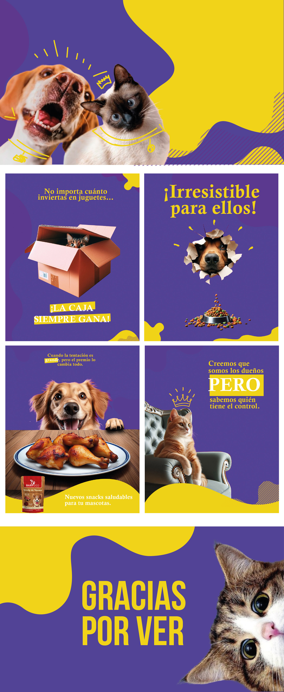

Planificación y diseño de contenido estratégico para redes sociales. Creación de sistemas visuales, guías de estilo y plantillas reutilizables para mejorar consistencia y performance.
Definir una línea visual coherente para publicaciones y anuncios; ordenar tipografías, color y composición; y crear un set de plantillas reutilizables para acelerar la producción sin perder calidad.
El desafío principal era lograr que marcas con identidades muy distintas tuvieran sistemas de comunicación digital propios, escalables y con personalidad definida.
Sistema de seis publicaciones como plantillas base para una empresa de marketing, priorizando coherencia visual y representación de valores nacionales con fuerte énfasis en la argentinidad.
Estilo divertido y cercano con humor y lenguaje visual lúdico para conectar con un público joven. Generación de identificación a través de referencias culturales y chistes visuales.
Comunicación con tono amigable y accesible para acercar la marca tanto a dueños de mascotas como a profesionales del sector, usando recursos visuales de carácter empático.
.jpg)


Trabajar con identidades tan distintas en simultáneo obligó a construir sistemas lo suficientemente flexibles como para adaptarse a cada voz de marca sin perder eficiencia de producción.
La clave fue documentar cada decisión de diseño en una guía de estilo clara, de modo que cualquier persona del equipo pudiera generar piezas nuevas con coherencia visual garantizada.
Explorá todas las piezas, el proceso y los entregables finales.